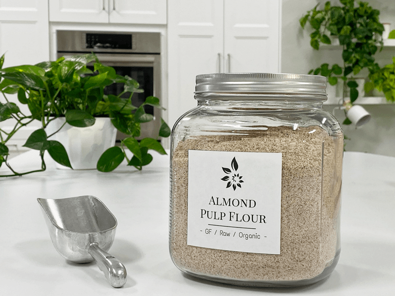
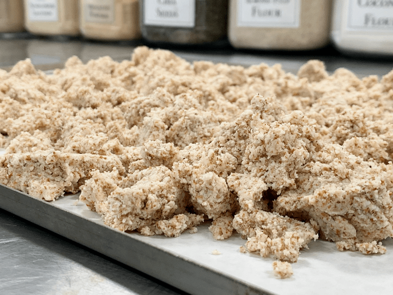
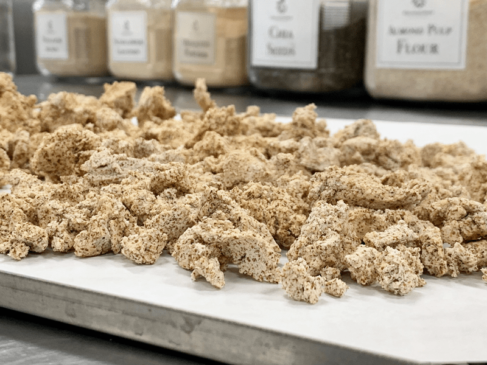
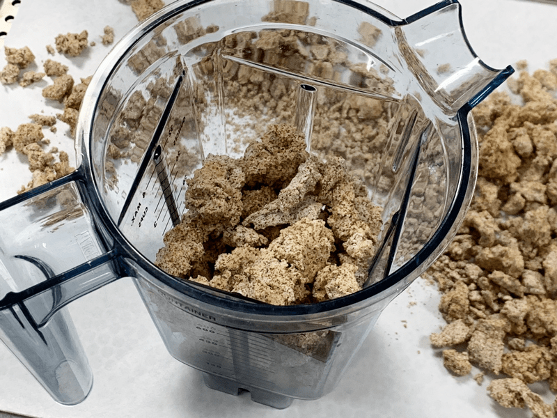
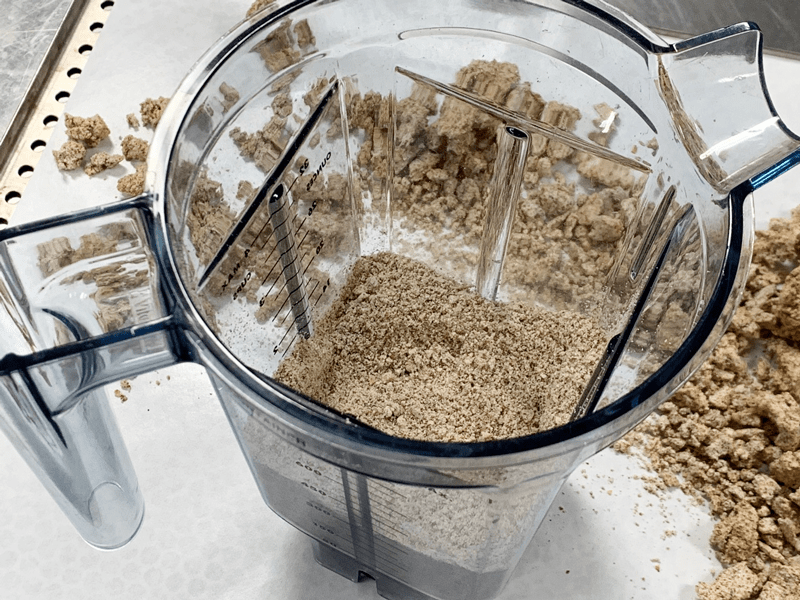
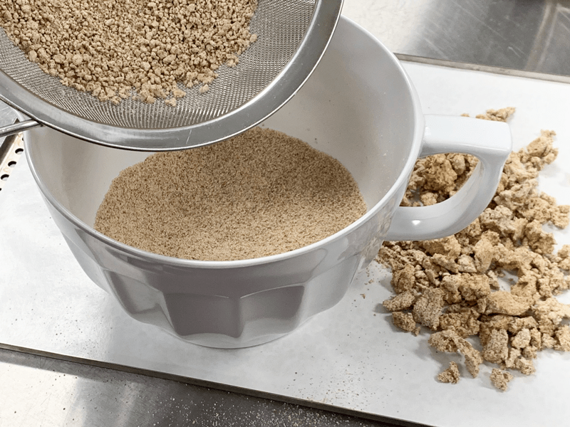
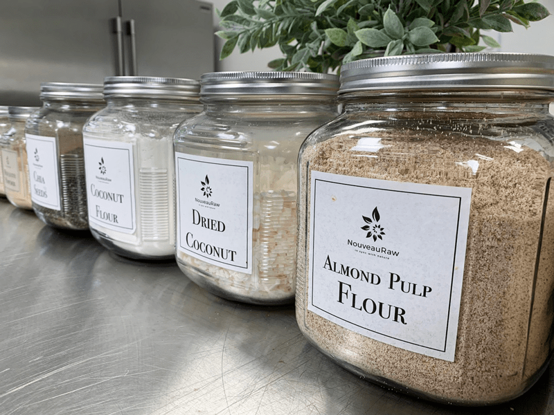

Almond Flour – made from Almond Pulp
Almond flour made from the dehydrated almond pulp is the next best thing in texture to commercially made almond flour (which isn’t raw). Be aware that many people refer to this type of flour as an “almond meal.” If you are ever concerned about what the recipe developer is using, please ask them because it can make a big difference in the outcome.

I have known people to use plain ground up almonds as a “flour/meal,” which works great, but it will affect the texture and taste of a recipe versus using this type of flour. To learn how to make almond flour from whole almonds, please refer to this posting.
By-Produce of Almond Milk
If you are new to preparing unprocessed foods such as this, the almond pulp is the by-product of making almond milk. It just tickles me that we can take one ingredient, almonds… and make a “milk” and a “flour” out of it, two wonderful products with absolutely no waste. Making your own almond milk is so easy. Take a deep breath and press (here) for step by step instructions on how to make your own almond milk.
For further reading on almond pulp, click (here). I have plenty of information to keep you busy. But I promise you, in the end, you will be so happy learning all of this excellent information. It will help you build your confidence in the kitchen, which will not only result in joy and, but also, let’s not forget, good tasting food! And should you ever find yourself overwhelmed, remember that I am here to help you? Just leave a comment below, and I will be sure to guide you to success in the best way I know-how. :)
As a rule of thumb… 1 cup of almonds will roughly produce 1/2 cup of packed, moist almond pulp. This amount will vary depending on how much moisture you hand-squeeze out of the pulp. For most people, they don’t produce enough almond milk to have a substantial amount of almond pulp on hand. That’s ok. After making the milk, you can either dehydrate what little pulp you have right away, or you can put it in a freezer-safe bag or container and create a stockpile in the freezer. Then when you have enough, you can process it all into flour. Do whatever system works best for you!
Texture-wise, this type of almond flour is very light and fluffy. It works wonderfully alone or paired with other types of flours such as; coconut flour, oat flour, and buckwheat flour.
Before I let you jet off to the kitchen to make some almond flour, I just wanted to share one last bit of info. If you are looking for a pure white type of flour due to the end look of a recipe, you can remove the skins from the almonds before making almond milk with them. This technique will leave you with pure white almond pulp and trust me; it is just gorgeous. Well, not on the runway gorgeous… or maybe it is. :) To remove the skins from the almonds, learn how by clicking (here). You don’t have to follow the quantities of the pulp, as listed below. I just happened to have 4 cups of pulp on hand, so I used all of it as a guide for measurements. So, for example, 4 cups of almond pulp = 7 cups dried pulp, which = 3 1/4 cup flour.
 Ingredients:
Ingredients:
yields 3 1/4 cup flour
Preparation:
- Start by making almond milk. You will be using the pulp from the almond milk to make the flour. If you like to flavor and sweeten your almond milk, be sure to remove the pulp first, so you don’t flavor the pulp.
- Spread the almond pulp out on the non-stick teflex sheet that comes with the dehydrator.
- For four cups of pulp, I used two full-size Excalibur dehydrator trays; this can vary depending on the dehydrator make and model.
- Dehydrate at 145 degrees (F) for 1 hour, then decrease to 115 degrees (F) for 6-8 hours, or until completely dry.
- Once the pulp is dehydrated and cooled back down to room temperature, place it in either a dry Vitamix container, a Bullet, or a spice or coffee grinder.
- Grind until it is a fine flour texture.
- I don’t recommend a food processor if you wish for really fine flour.
- I recommend grinding small portions at a time.
- To create a fine flour, run the ground almond flour through a sifter. Place any large particles of almonds back in the grinder and process it again.
- I store mine in the fridge or freezer (depending on space) for up to 3 months. I prefer to use freezer-safe mason jars for storing the flour.
Culinary Explanations:
- Why do I start the dehydrator at 145 degrees (F)? Click (here) to learn the reason behind this.
- When working with fresh ingredients, it is essential to taste test as you build a recipe. Learn why (here).
- Don’t own a dehydrator? Learn how to use your oven (here). I do, however honestly believe that it is a worthwhile investment. Click (here) to learn what I use.

- Do I need to soak almonds before making milk? Yes, read why (here).
- I want to make pure white flour. Click (here) to learn how to remove the skins off of the almonds.
- How do I make almond milk so I can have some almond pulp? Click (here).
- I love making my own almond milk, but I don’t have enough hand strength. Click (here) for a new technique I discovered.
- I would love to make my own almond milk, but I can’t get my family to drink it because it separates. Have no fear. I have a recipe on how to make “Homogenized” Almond Milk; it stays creamy and smooth even after days of sitting in the fridge.
- Even after reading all of this, I want more info on almond pulp. Click (here), and I will fill your noggin with all sorts of information.
- I don’t have time to make my own milk and dehydrate the pulp. I need a quick raw almond flour right now. I got your back, click (here).
- Ok, Amie Sue… I have tons of almond pulp, but I don’t want to dehydrate it to make flour, what else can I do with it? Glad you asked! On the left side of your screen towards the top, you will see a (search) box. Type in “almond pulp” and oodles of recipes will pop up for you. The same goes for searching for recipes that use “almond flour.”
Make almond milk.

After making the milk, you will be left with almond pulp.
-

-
Spread the wet almond pulp onto the dehydrator tray.
-

-
Once dry, let it cool completely before grinding it to a powder.
-

-
Fill the blender carafe 1/2 way and slowly turn the speed to high.
-

-
This is what it looks like after grinding it down.
-

-
Sift the almond flour into a bowl catching the larger pieces in the stainer.
-

-
Place in an airtight container for storage.
© AmieSue.com